Scout
Team Fortress 2
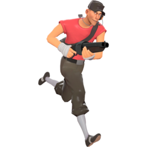
Basic Information
Icon:
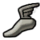
Type:Offensive
Health:125/185
(See Health below for further details)
(See Health below for further details)
Speed:133%
(See Speed below for further details)
(See Speed below for further details)
Meet The Scout
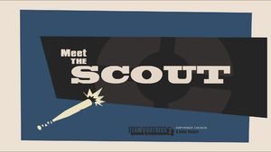
Born and raised in Boston, Massachusetts, USA, the Scout is a fast-running scrapper with a baseball bat and snarky in-your-face attitude. He is the fastest and most mobile mercenary on the battlefield unassisted. Scout's Double Jump helps him outmaneuver slower opponents like the Heavy and navigate the terrain while dodging oncoming bullets and projectiles. Carrying a Scattergun, Pistol, and Bat, he is an ideal class for aggressive fighting and flanking. Scout excels at hit-and-run tactics that sap away enemy health as his high mobility allows him to get in, do damage, and escape before being noticed. His ability to run in and out of contested hot spots quickly enables him to turn the tide of battle before the enemy team can even take notice. However, Scout possesses the lowest default health pool (alongside the Engineer, Sniper, and Spy), leaving him vulnerable on the front line.
Scout is a generally excellent choice for focusing on the objective. He is the only class that can capture control points and push carts at twice the normal rate. The Demoman and Soldier can only replicate this ability when equipping the Pain Train. His speed also makes him ideal for capturing intelligence briefcases.
The Scout is voiced by Nathan Vetterlein.
Bio
Name:Jeremy Willis
Location of origin:Boston, Massachusetts, USA
Job:Rapid Recovery
Motto:"Too. Much. Caffeine."
Special ability:Double jump
Emblems:
Description:
The youngest of eight boys from the south side of Boston, the Scout learned early how to solve problems with his fists. With seven older brothers on his side, fights tended to end before the runt of the litter could maneuver into punching distance, so the Scout trained himself to run. He ran everywhere, all the time, until he could beat his pack of mad dog siblings to the fray.
Health
| Class | Health | Overheal | Quick-Fix Overheal |
|---|---|---|---|
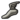 Scout |
125 | 185 | 158 |
| With the Sandman equipped | 110 | 165 | 139 |
Speed
| Condition | Normal | Backward | Crouched | Swimming |
|---|---|---|---|---|
| Scout | 133% | 120% | 44% | 107% |
| Baby Face's Blaster at 0% boost | 120% | 108% | 40% | 96% |
| Baby Face's Blaster at 50% boost | 147% | 132% | 49% | 117% |
| Baby Face's Blaster at 100% boost | 173% | 156% | 58% | 139% |
Basic Strategy
- Jump again in mid-air to change direction and avoid enemy fire
- You capture control points and push carts twice as fast as any other class.
- You are most effective when you stay moving and use your speed to your advantage.
- Your Scattergun is deadly at point-blank range.
- Your Pistol is great for picking off enemies at a distance.
- Press "E" to call for a Medic if you get hurt. Nearby Medics will be notified of your need.
Weapons
Primary
| Weapon | Kill icon | Ammo Loaded | Ammo Carried | Damage Range | Notes / Special Abilities |
|---|---|---|---|---|---|
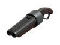 Stock Scattergun |
6 | 32 | Base: 60 Crit: 180 [6 damage × 10 pellets] |
||
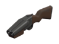 Unlock Force-A-Nature |
2 | 32 | Base: 65 Crit: 194 [5.4 damage × 12 pellets] |
On hit: applies a knockback effect that propels enemies backwards and the user in the opposite direction (if airborne). This allows the user to perform a Force Jump and to horizontally prolong any other jumping technique. 50% faster firing speed. 20% more pellets per shot. 66% smaller clip size. 10% less damage per pellet. If one shot is unused before reloading, it is lost. |
|
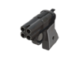 Craft Shortstop |
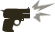 |
4 | 32 | Base: 48 Crit: 144 [12 damage × 4 pellets] |
42% faster firing speed. 100% more damage per pellet. Has a clip-based reload. Alt-Fire: does a shove that pushes enemies. 60% fewer pellets per shot. 33% smaller clip size. 20% increase in push force taken from damage and airblast while deployed. |
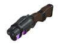 Craft Soda Popper |
2 | 32 | Base: 60 Crit: 180 [6 damage × 10 pellets] |
A hype meter is placed on the HUD when the Soda Popper is equipped. Damage dealt by the player will build up 'hype'. After dealing roughly 350 damages, the player can activate Hype mode for 8 seconds, allowing for 5 additional air jumps. 25% faster reload speed. 50% faster firing speed. 66% smaller clip size. If one shot is unused before reloading, it is lost |
|
Craft Baby Face's Blaster |
4 | 32 | Base: 60 Crit: 180 [6 damage × 10 pellets] |
Equipping the Baby Face's Blaster will slow the Scout down from 133% of normal speed to 120% of normal speed. A boost meter is placed on the HUD when the Baby Face's Blaster is equipped. Dealing damage, regardless of weapon used while equipping the Baby Face's Blaster, builds up the boost meter, increasing the Scout's speed to 173% of normal speed. The boost meter maxes at 100 points of damage dealt. 34% smaller clip size. 10% slower movement speed on wearer. Boost reduced on air jumps. Boost reduced when hit. |
|
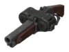 Craft Back Scatter |
4 | 32 | Base: 60 Crit: 180 [6 damage × 10 pellets] |
Minicrits targets when fired at their back from close range. 34% smaller clip size. No random critical hits. +20% bullet spread. |
Secondary
| Weapon | Kill icon | Ammo Loaded | Ammo Carried | Damage Range | Notes / Special Abilities |
|---|---|---|---|---|---|
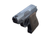 Stock Pistol |
12 | 36 | Base: 15 Crit: 45 [6 rounds / sec.] |
||
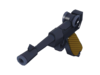 Promotional Lugermorph |
|||||
Craft Shortstop |
Killed enemies suffer a distinctive death by incineration. | ||||
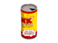 Unlock Bonk! Atomic Punch |
N/A | 1 | ∞ | N/A | When used, the player is immune to all damage, but is unable to attack. Knockback still affects the player. After the effect wears off, the user is subjected to a slowdown effect based on the damage absorbed; this scales from 25% at low damage to 50% at 200+ damage. The slowdown effect lasts for 5 seconds. The invulnerability effect lasts for 8 seconds and then has to recharge for about 22 seconds in order to be used again. |
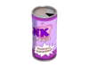 Craft Crit-a-Cola |
N/A | 1 | ∞ | N/A |
|
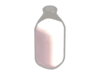 Craft Mad Milk |
N/A | 1 | ∞ | N/A | damage (except afterburn) done to enemies covered in milk restores 60% of the damage dealt to the attacking player's health. Partially nullifies Cloak on enemy Spies. Extinguishes fire on wielder and allied players. Has a 20-second recharge time. + 20% decrease in recharge time when you extinguish an allied player. |
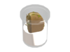 Uncrate Mutated Milk |
|||||
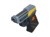 Craft Winger |
5 | 36 | Base: 17 Crit: 52 [5 rounds / sec.] |
15% more damage. Jump height increased by 25% when active. 60% smaller clip size. |
|
Craft Pretty Boy's Pocket Pistol |
5 | 36 | Base: 15 Crit: 45 [7 rounds / sec.] |
On Hit: Gain up to +3 health. 15% faster firing speed. 25% smaller clip size. |
|
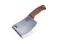 Promotional / Craft Flying Guillotine |
1 | ∞ | Base: 50 Crit: 150 Bleeding: 8 / sec. × 5 secs. |
Can be thrown to damage enemies. Recharges after 6 seconds. On hit: cause bleeding for 8 seconds. Long-distance hit reduces charge time by 1.5 seconds. No random Critical Hits. Cannot be picked up after being thrown. |
Melee
| Weapon | Kill icon | Ammo Loaded | Ammo Carried | Damage Range | Notes / Special Abilities |
|---|---|---|---|---|---|
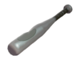 Stock Bat |
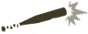 |
N/A | N/A | Base: 35 Crit: 105 |
|
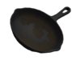 Promotional Frying Pan |
|||||
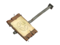 Craft Conscientious Objector |
|||||
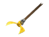 Promotional Freedom Staff |
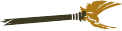 |
||||
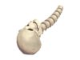 Drop Bat Outta Hell |
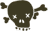 |
||||
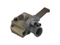 Distributed Memory Maker |
|||||
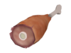 Promotional Ham Shank |
|||||
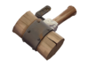 Unlock Necro Smasher |
|||||
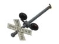 Uncrate Crossing Guard |
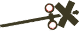 |
||||
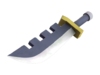 Promotional Prinny Machete |
|||||
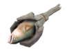 Craft Holy Mackerel |
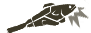 |
Broadcasts every successful hit on an enemy player over the death-notice area. Kills are labeled as " " and "ARM-KILL!" respectively in the death-notice area. |
|||
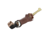 Craft Unarmed Combat |
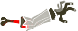 |
||||
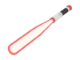 Uncrate Batsaber |
Killed enemies suffer a distinctive death by incineration. | ||||
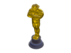 Distributed Saxxy |
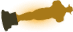 |
Limited item from the Replay Update. Killed enemies freeze into solid Australium statues (purely cosmetic feature). |
|||
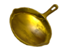 Reward Golden Frying Pan |
Limited item from the Two Cities Update. Killed enemies freeze into solid Australium statues (purely cosmetic feature). |
||||
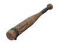 Unlock Sandman |
Bat: N/A | N/A | Base: 35 Crit: 105 |
Alt Fire: Launches a baseball that slows the enemy between 1-7 seconds, depending on distance. The baseball recharges over 10 seconds, can be picked up from the ground after launch, or can be replenished from a resupply cabinet. Lose 15 max health. |
|
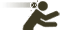 |
Ball: 1 | ∞ | Base: 35 Crit: 105 |
||
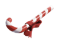 Craft Candy Cane |
Bat: N/A | N/A | Base: 35 Crit: 105 |
A small health pack is dropped when the player kills an enemy, regardless of what weapon the player was using in order to kill the enemy. 25% Explosive damage vulnerability on wearer. |
|
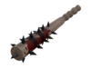 Craft Boston Basher |
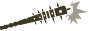 |
N/A | N/A | Base: 35 Crit: 105 Bleeding: 8 / sec. × 5 secs. |
On hit: causes bleed to enemy for 5 seconds. On miss, causes self-damage and bleed to the player for 5 seconds. |
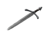 Promotional / Craft Three-Rune Blade |
|||||
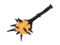 Promotional / Craft Sun on a Stick |
N/A | N/A | Base: 26 Crit: 79 |
Guarantees Critical damage on burning targets. 25% damage resistance from fire while this weapon is active. 25% less damage. |
|
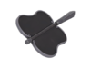 Promotional / Craft Fan O'War |
N/A | N/A | Base: 9 Crit: 26 |
On hit: one target at a time is marked for death, causing all damage taken to be mini-crits for 15 seconds. Crits whenever it would normally mini-crit. Deals 75% less damage. |
|
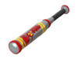 Craft Atomizer |
N/A | N/A | Base: 30 Crit: 89 |
Grants the ability to triple jump while weapon is deployed. Melee attacks mini-crit while airborne. 15% less damage against players. 50% deploy penalty. |
|
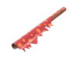 Craft Wrap Assassin |
Bat:N/A | N/A | Base: 12 Crit: 37 |
Alt-Fire: Launches a festive ornament that shatters causing bleeding on direct hit and explodes hurting everyone close to the explosion. The Bauble recharges over 7.5 seconds or can be replenished from a resupply cabinet. 25% increase in ball recharge rate. 65% less damage. |
|
| Ball: 1 | ∞ | Base: 15 Crit: 45 Bleeding: 8 / sec. × 5 secs. |
Taunt Attack
| Associated Items | Description | Kill Icon | |
|---|---|---|---|
| Sandman Atomizer |
The Scout points to the sky,winds up, and swings his bat, all without sound. If an enemy is successfully hit, applause is heard. |
Ability taunt
| Associated Items | Description | |
|---|---|---|
| Bonk! Atomic Punch Crit-a-Cola |
The Scout takes a short, refreshing drink from his soda can, activating the effect of his drink. |
Item-sets
| The Special Delivery | ||||
|---|---|---|---|---|
| Effect | Leave a Calling Card on your victims | |||
| The #1 Fan | ||||
|---|---|---|---|---|
| Effect | No effect | |||
| The Curse-a-Nature | |||
|---|---|---|---|
| Effect | No effect | ||
| Santa`s Little Accomplice | |||
|---|---|---|---|
| Effect | No effect | ||
| The Public Enemy | ||||
|---|---|---|---|---|
| Effect | No effect | |||
| The Boston Bulldog | ||
|---|---|---|
| Effect | No effect | |
| The Retro Rebel Pack | ||||
|---|---|---|---|---|
| Effect | No effect | |||
| The Wicked Good Ninja Pack | |||
|---|---|---|---|
| Effect | No effect | ||
| The Isolationist Pack | |||
|---|---|---|---|
| Effect | Increased Melee damage against Isolated Merc set Increased Nostromo Napalmer damage taken from Isolated Merc set |
||
| The Deep-Fried Dummy | |||
|---|---|---|---|
| Effect | No effect | ||
| The Rooftop Rebel | |||
|---|---|---|---|
| Effect | No effect | ||
| Sixties Sidekick | |||
|---|---|---|---|
| Effect | No effect | ||
- The Gold Rush Update (April 29, 2008)
- The Pyro Update (June 19, 2008)
- A Heavy Update (August 19, 2008)
- The Scout Update (Febuary 24, 2009)
- The Sniper vs. Spy Update (May 21, 2009)
- Classless Update (August 13, 2009)
- Hallowe'en Special (October 29, 2009)
- WAR! Update (December 17, 2009)
- 119th Update (April 29, 2010)
- The Mac Update (June 10, 2010)
- The Engineer Update (July 8, 2010)
- The Mann-Conomy Update (September 30, 2010)
- Scream Fortress Update (October 27, 2010)
- Australian Christmas (December 17, 2010)
- The Hatless Update (April 14, 2011)
- The Replay Update (May 5, 2011)
- The Über Update (June 23, 2011)
- The Manniversary Update (October 13, 2011)
- Very Scary Halloween Special (October 27, 2011)
- Australian Christmas 2011 (December 15, 2011)
- Pyromania Update (June 27, 2012)
- Mann vs. Machine Update (August 15, 2012)
- Spectral Halloween Special (October 26, 2012)
- Mecha Update (December 20, 2012)
- Robotic Boogaloo Update (May 17, 2013)
- Two Cities Update (November 21, 2013)
- Smissmas 2013 (December 20, 2013)
- Love & War Update (June 18, 2014)
- Scream Fortress 2014 (October 29, 2014)
- End of the Line Update (December 8, 2014)
- Smissmas 2014 (December 22, 2014)
- Gun Mettle Update (July 2, 2015)
- Invasion Update (October 6, 2015)
- Scream Fortress 2015 (October 28, 2015)
- Tough Break Update (December 17th, 2015)
- Meet Your Match Update (July 7th, 2016)
- Scream Fortress 2016 (October 21, 2016)
- Smissmas 2016 (December 21, 2016)
- Jungle Inferno Update (October 20th, 2017)
- Scream Fortress 2017 (October 26th, 2017)
- Scream Fortress 2018 (October 19th, 2018)
- Scream Fortress 2019 (October 10th, 2019)
- Scream Fortress 2020 (October 1st, 2020)
- Scream Fortress 2021 (October 5th, 2021)
- Scream Fortress 2022 (October 5th, 2022)
- Summer 2023 Update (July 12th, 2023)